有毒有害动物
| 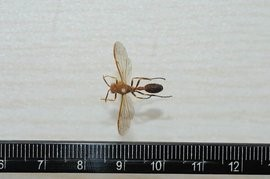 | 印度异侧胡蜂 印度侧异腹胡蜂， 社会性昆虫，有后蜂、雄蜂、职蜂之别。腹部第一节较长，其余各节形成长纺锤形的腹部。分布于江苏、浙江、江西、四川、福建、广东、云南。触角窝之间棕色，略隆起。两复眼内缘黄色，额上半部暗棕色。前胸背板前缘隆起，两肩角明显，棕色。中胸背板深棕色，小盾片深棕色，后小盾片横带状，端部钝角突起，呈略浅的棕色。腹部第一节柄状，近端部处背板隆起，两侧棕色。体长16毫米，雄蜂体略小，体长14毫米。 |
| 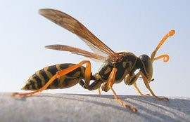 | 马蜂 马蜂，学名"胡蜂"，又称为"蚂蜂"或"黄蜂"。体大身长毒性也大，膜翅目(Hymenoptera)细腰亚目(Apocrita，过去称为针尾亚目〔Aculeata〕)内除蜜蜂类及蚊类之外的能螫刺的昆虫，以及广腰亚目(Symphyta)，是一种分布广泛、种类繁多、飞翔迅速的昆虫。属膜翅目之胡蜂科，雌蜂身上有一根有力的长螫针，在遇到攻击或不友善干扰时，会群起攻击，可以致人出现过敏反应和毒性反应，严重者可导致死亡。马蜂通常用浸软的似纸浆般的木浆造巢，食取动物性或植物性食物。 |
| 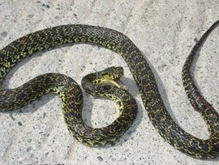 | 菜花原矛头蝮 菜花原矛头蝮(学名:Protobothrops jerdonii)为蝰科原矛头蝮属的爬行动物，俗名菜花烙铁头、菜花蝮、菱斑竹叶青。 菜花原矛头蝮头较窄长、三角形、吻棱明显，上颌骨具管牙，为有颊窝的毒蛇。背面黑黄间杂。多生活于海拔较高的山区或高原、常栖于荒草坪、耕地内、路边草丛中、乱石堆中或灌木下以及亦见于溪沟附近草丛中或干树枝上。该物种的模式产地在印度阿萨姆。 |
| 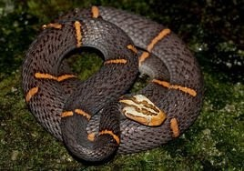 | 白头蝰 白头蝰(学名:Azemiops feae)是中国27种毒蛇之一，又名白头蛇，为蝰科白头蝰属的爬行动物，俗名白缺蝰。 白头蝰头部白色，有浅褐斑纹。躯、尾背面紫褐色，有左右镶细黑边的朱红色窄横纹。 白头蝰分布于缅甸、越南以及中国大陆的浙江、安徽、福建、江西、广西、四川、贵州、云南、西藏、陕西、湖北、甘肃等地，常见于丘陵及山区以及栖息于山区草地、麦田兰草堆下、路边、碎石地、稻田、甘蔗田边及甘薯地旁的草丛中。该物种的模式产地在缅甸。 |
| 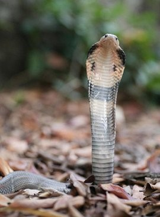 | 舟山眼镜蛇 舟山眼镜蛇（学名：Naja atra）又名中华眼镜蛇，在广东、广西、香港俗称饭铲头，台湾则称之为饭匙倩、饭匙铳、膨颈蛇。属于眼镜蛇科，分布于中国南部、台湾和中南半岛的中低海拔地区。 舟山眼镜蛇为大型前沟牙毒蛇。受惊扰时，常竖立前半身，颈部平扁扩大，作攻击姿态，同时颈背露出呈双圈的"眼镜"状斑纹。舟山眼镜蛇体色一般为黑褐或暗褐，背面有或无白色细横纹。成蛇体全长为1.5-2m。 |
| 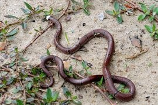 | 中华珊瑚蛇 中华珊瑚蛇( Sinomicrurus macclellandi )，俗称丽纹蛇、赤伞节，环纹赤蛇(台湾)。 繁殖方式卵生。习性夜间活动为主，神经毒，性情温驯，喜欢栖息山区底层落叶堆中。体形特征 小型蛇类，最大可达98公分，主要特徵头后方有一宽明显的白色环带，身体红色为主，全身散布着黑色的黑环带，外侧有黄色细边。 |
| 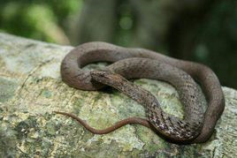 | 紫沙蛇 紫沙蛇(学名:Psammodynastes pulverulentus):为游蛇科紫沙蛇属的爬行动物。头略呈三角形;眼大，瞳孔直立椭圆形;颈细，头颈分明。头背及两侧有对称的绿褐色纵纹，向后延伸;头背顶部隐约可见黑色"Y"形纹;体背紫褐色，背鳞平滑无光泽，中段17行;腹面黄褐色。密布紫褐色小点，有点小点并列成数条纵纹。 一般栖息于平原、山麓或低山以及常栖于林荫下水草丰茂处。其生存的海拔上限为1620米。生活于平原、在这种环境中，其体形及体色较深，与枯枝相似;亦常见于住宅附近路上或石缝中。在干燥的地方体色可变浅。白天、傍晚均见外出活动捕食。吃蛙及蜥蜴，偶亦吃蛇。卵胎生。分布于尼泊尔、锡金、印度、缅甸、老挝、越南、马来半岛、印度尼西亚、菲律宾、以及中国。 |
| 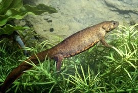 | 细痣疣螈 细痣疣螈（学名： Blue-tail Cynops）属两栖纲、有尾目、蝾螈科。又名疣螈、黑痣疣螈。成年细痣疣螈体长11—15厘米。栖息于海拔500一1500米的山间密林地带，静水塘及其附近潮湿的腐叶中或树根下的土洞内，中低山区和林原水塘积水区。繁殖季节过后离开水塘，常栖于山坡植物根部或上穴内。分布于越南北部，在中国主要分布于的广东、广西以及西部的四川、贵州、甘肃等省。中国国家二级保护动物。 |
| 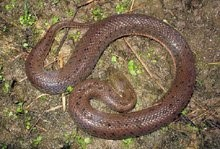 | 中国水蛇 中国水蛇(学名:Enhydris chinensis)是游蛇科水蛇属爬行动物，体粗壮，尾短。雄蛇全长263至490厘米，雌蛇全长275至834厘米。蛇体前部呈深灰色或灰棕色，具有大小不一的黑点，背鳞最外行暗灰色，外侧2至3行红棕色，腹鳞前半暗灰色，后半黄白色，上唇缘亦为黄白色。头较大，吻端宽钝，背鳞平滑，雄蛇腹鳞平均148.4枚，雌蛇腹鳞平均143.3枚，肛鳞二分，尾下鳞双行，雄蛇平均48.6对，雌蛇平均42.6对。 中国水蛇长年生活在水中，白天及晚上均见活动，食性杂，主要以鱼类、青蛙以及甲壳纲动物为食。种群主要分布在中国和越南。列入世界自然保护联盟(IUCN)2010年《濒危物种红色名录》ver 3.1--低危(LC) |
| 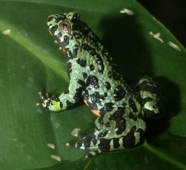 | 东方铃蟾 东方铃蟾(学名:Bombina orientalis)，是铃蟾科、铃蟾属的动物。东方铃蟾头扁平，吻圆，前、后肢短，皮肤粗糙，刺黑色，背部呈灰棕色，或背为绿色杂以不规则的黑色斑点，腹面有花斑，为黑色与朱红色或桔黄色。 东方铃蟾声音低沉，有冬眠习性，肉食性，5-7月产卵，每次产卵几十枚至百余枚不等，每年可产卵150-300枚，主要栖息在山溪的石下、草丛、路边、半山坡上的小水坑、石头坑等处，分布于中国、朝鲜民主主义人民共和国、韩国、俄罗斯联邦。 东方铃蟾已列入《世界自然保护联盟》(IUCN)2004年濒危物种红色名录。 |
| 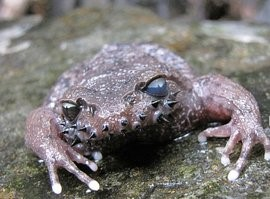 | 哀牢髭蟾 哀牢髭蟾(Vibrissaphora ailaonica)属两栖纲、无尾目、角蟾科，雄蟾上唇缘有10-16枚粗大黑刺，俗称"胡子蛙"，眼内虹彩的颜色上半部为蓝色，下半部为黑色，非繁殖的成体营陆地生活，繁殖期进入水中，2-4月产卵于水质清澈，水流平缓的溪流中，40天左右，可孵出蝌蚪，蝌蚪数量多，但成活至完成变态比例却很低。 哀牢髭蟾是中国的特有物种。分布于云南等地。该物种的模式产地在云南景东徐家坝。 生活于哀牢山和景东无量山海拔2400m常绿阔叶林下山溪中。 |
| 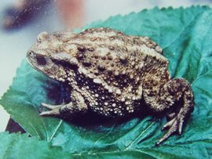 | 隐耳蟾蜍 隐耳蟾蜍（学名：Bufo cryptotympanicus）隐耳蟾蜍B.c7 cryptotympanicus liu et hu; Cryptotype nal toad体较干瘦。头宽大于头长;吻短,吻棱明显鼓膜完全不显;无犁骨齿;舌大,梨形,后端宽缺刻深。后肢较短,胫附关节达肩,左右跟部不遇,足比胫长,趾蹼较发达。皮肤粗糙,头顶及上眼睑散有小疣粒,背部小瘰粒少而圆,沿体背正中线两侧有两行较大的瘰粒,前后间距不规则排列。耳后腺长椭圆形,长宽之比2:1。生活时体背灰绿色,正中有一条脊纹;自吻端始沿吻棱侧下,有一条黑纹达眼前角或上眼睑外缘;体侧有一条黑带纹;腹部及四肢腹面有黑色云状斑。雌性体长81-88m雄性略小,无声囊。栖于海拔1650m山区河谷地带。栖息地：分布于广西等地。该物种的模式产地在广西龙胜 [1] 。 |
| 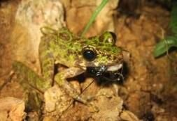 | 圆斑臭蛙 圆斑臭蛙，蛙科臭蛙属两栖动物。生活在云南西南边境海拔400～810m的伊洛瓦底江和澜沧江水系的支流，有巨石和急流的山溪中，喜在瀑布附近活动。雄蛙体长47.0～55.0（47.9）mm，雌蛙体长86.0～97.0（91.3）mm，雄蛙体长为雌蛙的52.4%。头长大于头宽；吻长，吻端纯尖，超出下颌甚多；头顶平坦；瞳孔横椭圆形，雄蛙鼓膜相对大于雌蛙且距眼近；犁骨齿两斜列，彼此甚近但不相遇。体和四肢背面皮肤光滑，无背侧褶，颞褶短，雄蛙颞部有小颗粒 |
| 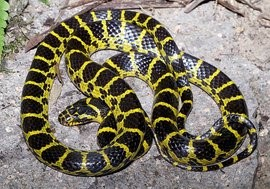 | 黄链蛇 黄链蛇（拉丁学名：Dinodon flavozonatum），游蛇科链蛇属，是一种外形或色斑与毒蛇类似的无毒蛇。黄链蛇背面具有黑黄相间的横纹，往往被误认为是金环蛇 [1] 。生活于山区森林，靠近溪流、水沟的草丛、矮树附近，偏树栖。主要以蜥蜴为食，也吃小蛇、爬行动物的卵。体较细长。头宽扁。头颈略能区分。眼小。瞳孔直立椭圆形。全长一般800mm左右。最大全长雄性(901+260)mm（福建崇安）。雌性(954+201)mm（江西井冈山）。头背、体背黑色。具50-96+13-28个黄色窄横斑。横斑宽度约为半枚鳞片的长度。在最外侧第5或第6背鳞处分叉延伸至腹鳞。尾后部分叉不明显；枕部具一倒“V”形黄斑。前端达顶鳞后缘。后端延伸至两侧口角；腹面灰白色。尾下鳞有黑色斑点。 |